Dialogue troisième
Entre le roy Henry quatre, les gouverneurs, les quatres et quelques vignerons de la ville de Besançon, l'année de grâce 1595
Click a manuscript image to enlarge it. Cliquez sur une image du manuscrit pour l’agrandir.
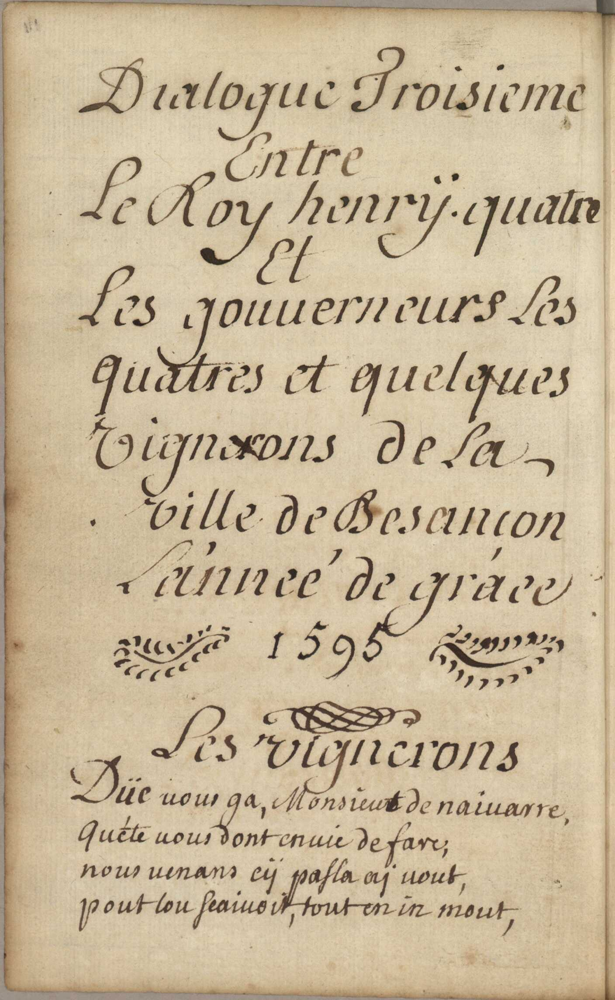
Dialogue troisieme entre le Roy henrÿ quatre les gouuerneurs les quatres et quelques uignerons de la uille de Besançon l'année de grace 1595
Les uignerons
Düe uou ga, Monsieur de naiuarre,
qu'ete uous dont enuie de fare,
nous uenans cÿ passa ai uout,
pout lou scaiuoit, tout en in mout,
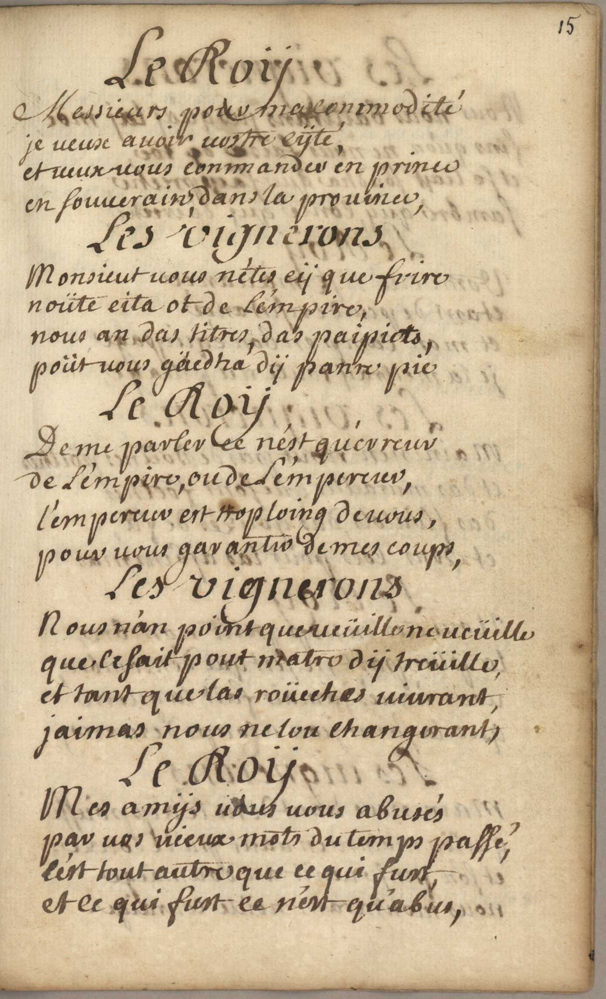
Le Roÿ
Messieurs pour ma commodité
je ueux auoir uostre cÿté,
et ueux uous commander en prince
en souuerain dans la prouince,
Les uignerons
Monsieut uous n'etes cÿ que fuire
noüte cita ot de l'empire,
nous an das titres, das paipiots
poüt uous gäedha dÿ panre pie
Le Roÿ
De me parler ce n'est qu'erreur
de l'empire, ou de l'empereur,
l'empereur est trop loing de uous,
pour uous garantir de mes coups,
Les uignerons
Nous n'an point que ueüille ne ueüille
que ce sait pour notre dÿ treüille
et tant que las roüeches uiurant
jaimas nous ne lou changerant,
Le Roÿ
Mes amÿs uous uous abusés
par uos uieux mots du temps passé,
c'est tout autre que ce qui fust
et ce qui fust ce n'est qu'abus,
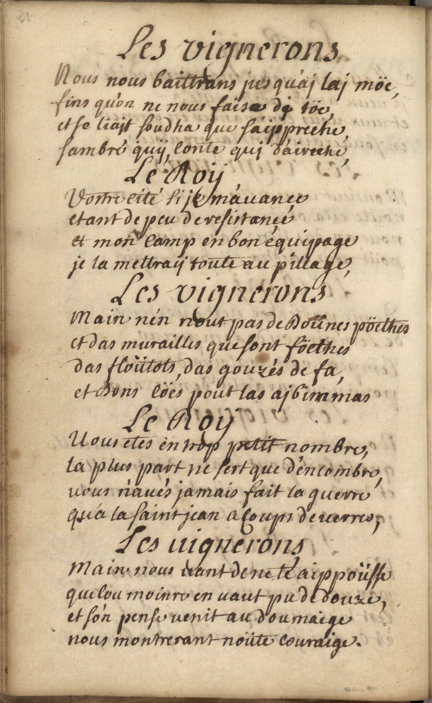
Les uignerons
Nous nous baittrans jusqu'ai lai möe,
fins qu'on ne nous faise di töe
et se li ait soudha que s'aippreche
sambré quÿ, conte qui d'aireché,
Le Roÿ
Uostre cité si je m'auançe
etant de peu de resistançe
a mon camp en bon équipage
je la mettraÿ toute au pillage,
Les uignerons
main n'en nout pas de boünes pöethes
et das murailles que sont föethes
das floütots, das gouzés de fa,
et bons cöes pout la aibimmas
Le Roÿ
Uous etes en trop petit nombre,
la plus part ne sert que d'encombre,
uous n'aués jamais fait la guerre
qu'a la saint jean a coups de uerres,
Les uignerons
Main nous uant de ne té aippoüsse
qui lou moinre en uaut pu de de douze,
et s'on pense uenit au doumaige
nous montrerant noüte couraige.
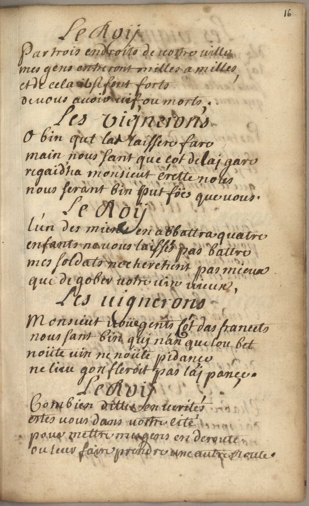
Le Roÿ
Par trois endroits de uostre uille
mes gens entreront milles a milles,
et de cela ils se font forts
de uous auoir uif, ou morts,
Les uignerons
O bin qul las laissere fare
main nous sant que çot de lai gare
regaid'ha monsieut crette nous
nous serant bin put föes que uous.
Le Roÿ
L'un des miens en abbatra quatre
enfants ne uous laissés pas battre
mes soldats ne cherchent pas mieux
que de gober uotre uin uieux,
Les uignerons
Monsieut uoüe gents c'ot das francets
nous sant bin qui n'an que lou bet
noüte uin ne noüte pidançe
ne lieu gonfleroit pas l'ai pançe.
Le Roÿ
Combien dittes en uerités
estes uous dans uortre cité
pour mettre mes gens en deroute
ou leur faire prendre une autre route.
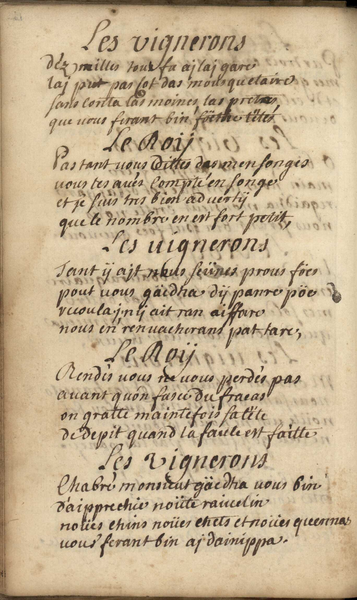
Les uignerons
Déz milles tous fa ai lai gare
lai put pas cot das mousquetaire
sans conta las moines, las pretres,
que uous ferant bin föethe tëtes
Le Roÿ
Pas tant uous dittes des mensonges
uous les aués compté en songe
et je suis tres bien aduertÿ
que le nombre en est fort petit,
Les uignerons
Tant ÿ ait nous scünes prous föes
pout uous gäedha dÿ panre pöe
recoula ji n'ÿ ait ran aiffare
nous en renuacherans pat tare,
Le Roÿ
Rendés uous ne uous perdés pas
auant qu'on fasce du fracas
on gratte mainte fois sa tëte
de depit quand la faute est faitte
Les uignerons
Chabré monsieut gäedha uous bin
d'aipprechie noüte raiuelin
noües chins noües chets et noües quennas
uous ferant bin aj dainippa
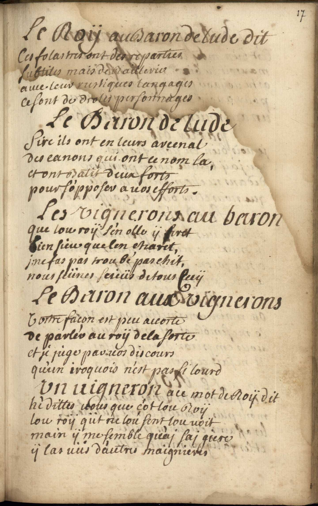
Le Roÿ au baron de lude dit
Ces folastres ont des reparties
subtiles mais de raillerie
auec leurs rustiques langages
ce sont de droles personnages
Le Baron de Lude
Sire ils ont en leurs arcenal
des canons qui ont ce nom la,
et ont batit deux forts
pour s'opposer a uos efforts.
Les uignerons au baron
que lou roÿ s'en olle ÿ bret
bien sieu que l'on charet,
ji ne fas pas trou bé paschit,
nous scümes seriüs de tous cuÿ
Le Baron aux uignerons
Uortre façon est peu auorte
de parler au roÿ de la sorte
et je pige par uos discours
qu'un iroquois n'est pas si lourd
Un uigneron au mot du Roÿ dit
hé dittes uous que c'ot lou Roÿ
lou roÿ qüt ne lou sent lou uoit
main ÿ me semble qu'ai sai giere
ÿ las uüs d'autres maignieres
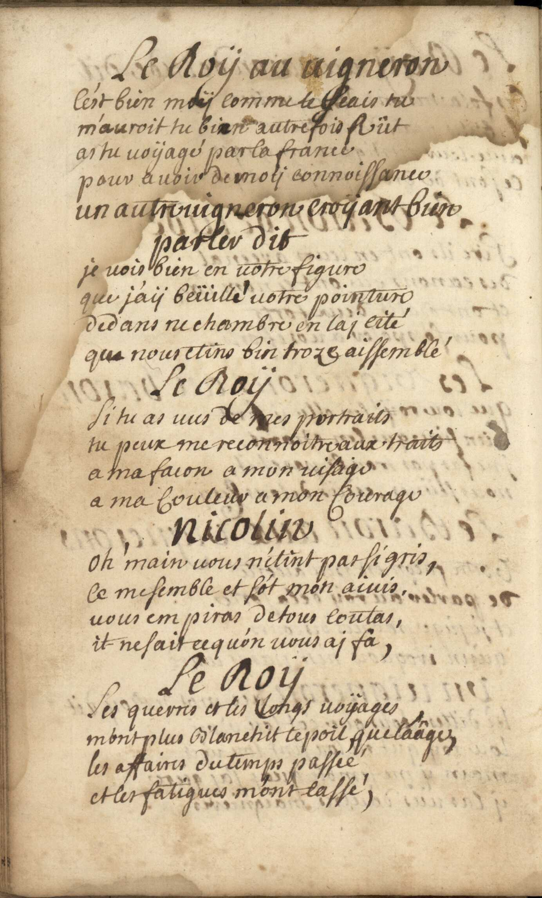
Le Roÿ au uigneron
C'est bien moÿ comme te scais tu
m'auroit tu bien autrefois scüt
as tu uoÿagé par la france
pour auoir de moÿ connoissance
Un autre uigneron croÿant bien parler dit
Je uois bien en uotre figure
que j'aÿ beüille uotre pointure
dedans ne chambre en lai cité
que nous etins bin troze aissemblé
Le Roÿ
Si tu as uus de mes portraits
tu peux me reconnoitre aux traits
a ma facon a mon uisage
a ma couleur a mon courage
Nicolin
Oh ! main uous n'etint pas si gris,
ce me semble et s'ot mon aiuis
uous empiras de tous coutas,
il ne sait ce qu'on uous ai fa,
Le Roÿ
Les guerre et les longs uoÿages
m'ont plus blanchit le poil que l'aâge,
les affaires du temps passée
et les fatigues m'ont lassé,
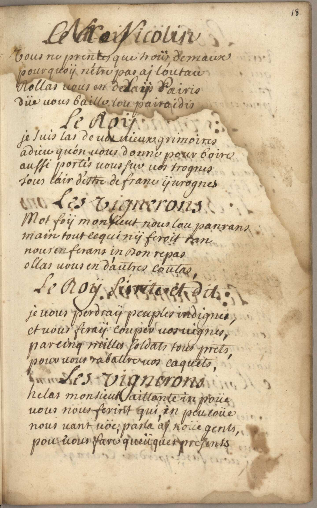
Le Roÿ (recouvert par : Mr Nicolin)
Uous ne prentes que troüs demaux
pourquoÿ n'etre pas aj toutau
Rollas uous en en delaÿ Pairis
düe uous baille lou pairaidis
Le Roÿ
Je suis las de uos uieux grimoires
adieu qu'on uous donne pour boire
aussi portés uous sur uos trognes
tous l'air d'estre de franc ÿurognes
Les uignerons
Mot foÿ monsieut nous lou panrans
main tout ce qui nÿ feroit ran
nous en ferans in bon repas
ollas uous en d'autres coutas.
Le Roÿ sirrite et dit:
je uous perdraÿ peuples indignes,
et uous feraÿ couper uos uignes,
par cinq milles soldats tous prets,
pour uous rabattre uos caquets,
Les uignerons
helas monsieut aittante in poüe
uous nous ferint qui, in pou coüe
nous uant uöe, parla ai noüe gents,
pou uous fare queüques presents
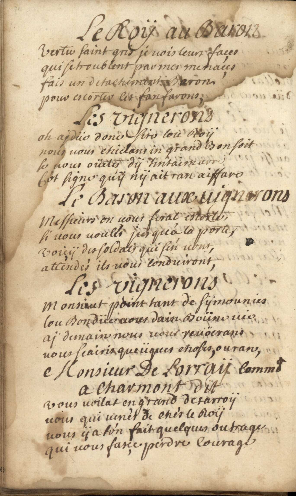
Le Roÿ au Baron
Uertu saint gris je uois leurs façes
qui se troublent par mes menaçes
fais un detachement Baron
pour escorter ces fanfarons,
Les uignerons
oh aidüe donc sire lou Roÿ
nous uous chiclans in grand bonsoir
se uous oüites dÿ tintaimarre
C'ot signe quÿ nÿ ait ran aiffare
Le Baron aux uignerons
Messieurs on uous ferat escorte,
si uous uoulés jusqu'a la porte,
uoiçÿ des soldats qui s'en uont,
attendés ils uous conduiront,
Les uignerons
Monsieut point tant de sÿmounies
lou bon düe uous dain boüne uie
ai demain nous uous reuöerans
nous scairis queüques choses, ou ran,
Monsieur de Lorraÿ comm[andant] à charmont dit
uous uoilat en grand desarroÿ
uous qui uenés de chés le Roÿ
uous ÿ a t'on fait quelques outrage
qui uous fasçe perdre courage
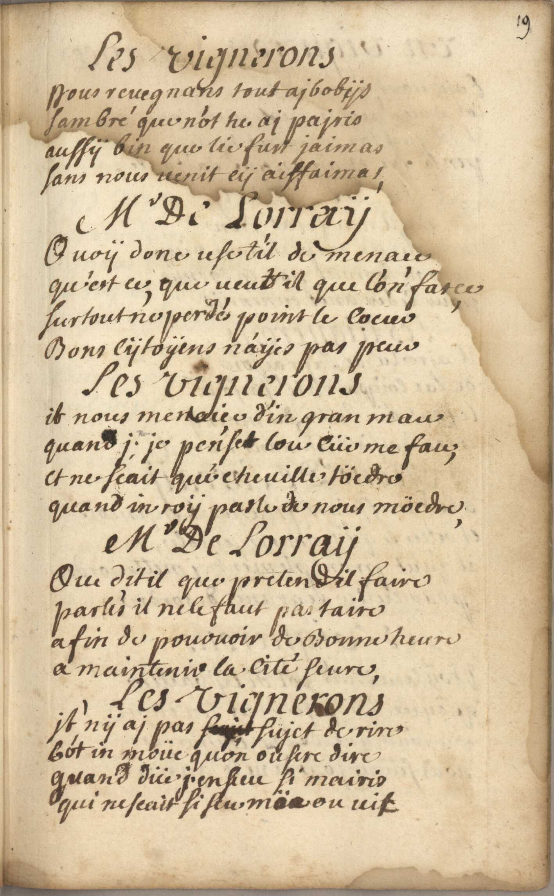
Les uignerons
Nous reuegnans tout aibobÿs
sambré que n'ot tu ai pairis
aussÿ bin que lie fust jaimas
sans nous uenit cÿ aiffaima!
Mr de Lorraÿ
Quoÿ donc use t'il de menaçe
qu'est ce que ueult il que l'on fasçes,
surtout ne perdé point le coeur
Bon cÿtoyens n'aÿes pas peur
Les uignerons
ils nous menaiçe d'in gran mau
quand ji je penser lou cüe me fau,
et ne scait qué cheuille töedre
quand in roÿ pasle de nous möedre,
Mr de Lorraÿ
Que dit il que pretend il faire
parlés il ne le faut pas taire
afin de pouruoir de bonne heure
a maintenir la cité scure,
Les uignerons
il n'ÿ aj pas sujet de rire
c'ot in moüe qu'on ousere dire
grand düe ji en sieu si mairis
qui ne scait si seu möe ou uit
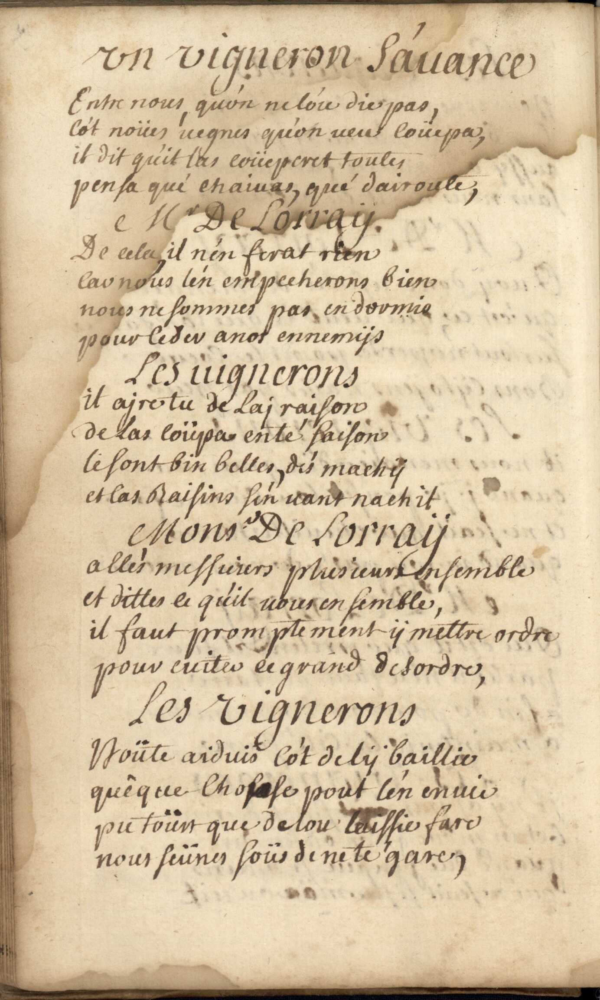
un uigneron s'auance
Entre nous, qu'on ne lou die pas,
co't noüs uegnes qu'on ueut coüepa,
il dit qu'il las coüeperet toute,
pensa qué chaiuas, qué dairoute,
Mr de Lorraÿ
De cela, il n'en ferat rien
car nous l'en empecherons bien
nous ne sommes pas endormie
pour ceder a nos ennemÿs
Les uignerons
Il ajre tu de laj raisons
de las coüpa en té saison
ce sont bin belles, dés machÿ
et las raisins s'en uant nachit
Mons de Lorraÿ
Allés messieurs plusieurs ensemble
et dittes ce qu'il uous en semble,
il faut promptement ÿ mettre ordre
pour euiter ce grand desordre,
Les uignerons
Noüte aiduis c'ot de lÿ baillie
quëque chose se pout l'en enuie
putoüst que de lou laissie fare
nous scünes soüs de ne te gare,
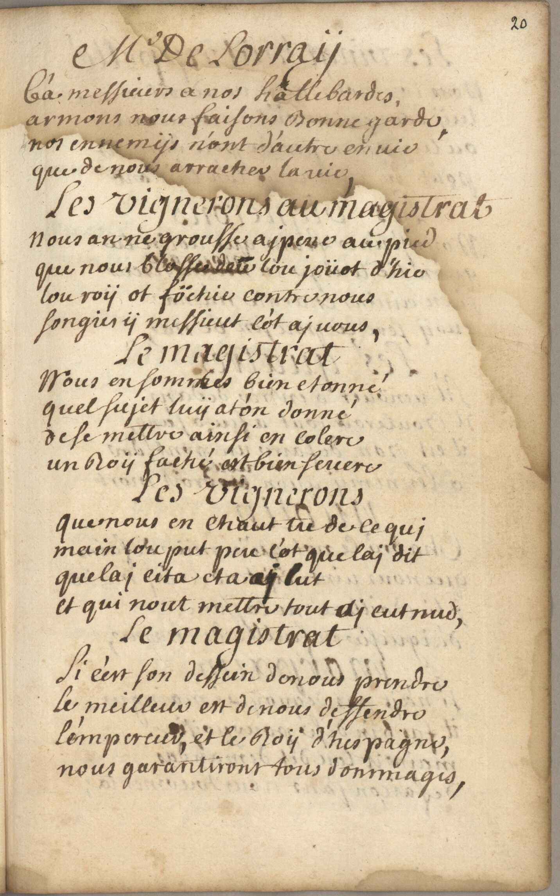
Les uignerons au magistrat
Nous an ne grousse ajpene au pied
que nous blosse deu lou joüot d'hie
lou roÿ ot föchie contre nous
songier ÿ messieut c'ot ai uous,
Le magistrat
Nous en sommes bien etonné
quel sujet luÿ a t'on donné
de se mettre ainsi en colere
un roÿ faché est bien seuere
Les uignerons
que nous en chaut tu de ce qui
main lou put peu c'ot que lai di
que laj cita eta ai lut
et qui nous mettre tout aÿ cut nud,
Le magistrat
Si c'est son dessein de nous prendre
le meileur est de nous deffendre
l'empereur, et le Roÿ d'hespagne,
nous garantiront tous dommages,
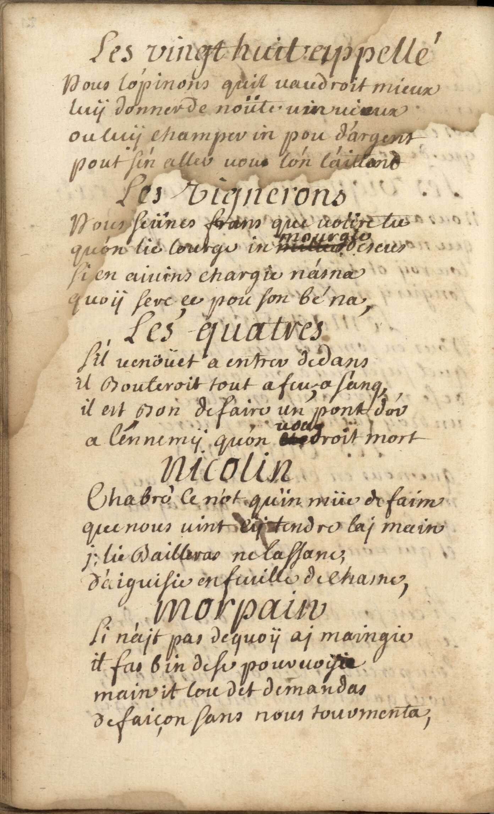
Les uingt huit appellé
Nous pous l'opinons quil uaudroit mieux
luÿ donner de noüte uin uieux
ou luÿ champer in pou d'argent
pout s'en aller uoue l'on l'aittans
Les uignerons
Nous scünes ferans que uoüre tu
qu'on lie lourgis in mourglo deseres
si en aiuins chargie n'asna
quoÿ sere çe pou son bé na,
Les quatres
S'il uenöüet a entrer dedans
il bouteroit tout a feu, a sang,
il est bon de faire un pont d'or
a l'ennemÿ qu'on uoudroit mort
Nicolin
Chabré ce n'ot qu'in müe de faim
que nous uint cÿ tendre lai main
ji lie bailleras ne lassane
d'aiguisie en furille de chasne,
Mortpain
Si n'ait pas de quoÿ ai maingie
il fas bin de se pouruoÿie
main il lou det demandas
de faiçon sans nous tourmenta,
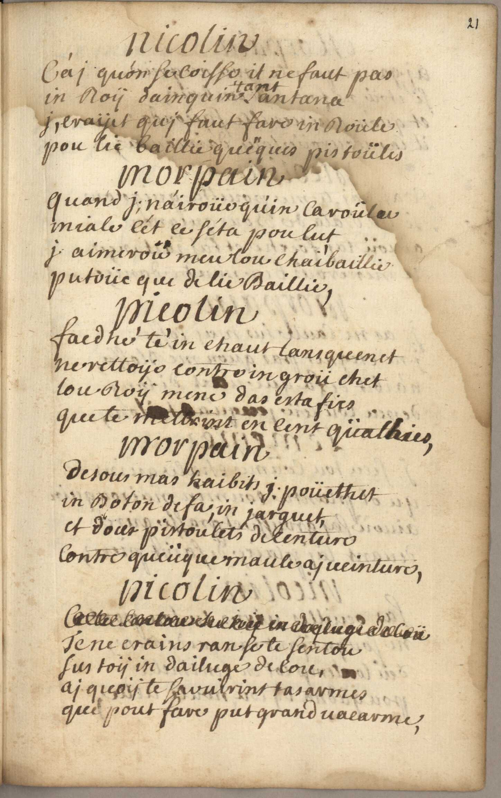
Nicolin
C'ai qu'on se coisse il ne faut pas
in Roÿ dainquin tant antance
ji craÿet qui faut fare in roüle
pour lie baillie quëques pistoüles
Morpain
Quand ji n'airoüe qu'un caroüler
miale c'et ce s'eta pou lut
j aimeroü meu lou chaibaillie
putoüe que de lie baillie,
Nicolin
Faedhé té in chaut lansquenet
ne rettoÿe contre in groü chet
lou Roÿ mene das estafirs
que te mettrint en cent qüarthies,
Morpain
Desous mas haibits ji poüethet
in boton de fa, in jarguet,
et doux pistoulets de centure
contre queüque maule ajueinture,
Nicolin
Je ne crains ran se te sentou
sus toÿ in dailuge de cou,
ai quoÿ te saruirint tas armes
que pout fare pu grand uacarme,
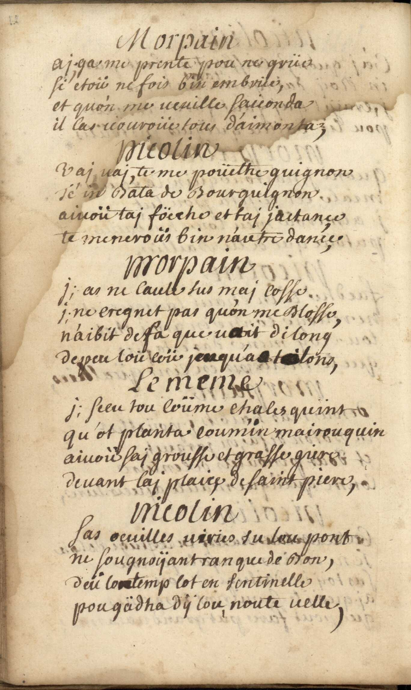
Morpain
ai ga me prente pou ne grüe
si etoü ne fois bin embrüe,
et qu'on me ueuille saiconda
il las uouroüe tous d'aimonta,
Nicolin
Uai uai, te me poüethe guignon
Te in bata de Bourguignon
aiuoü taj fëche et taj jactançe,
te meneroüs bin n'autre dançe,
Morpain
Ji as ne caule sus mai cosse
ji ne cregnet pas qu'on me blosses,
n'aibit de fa que uait di long
depeu loü coü jusqu'a t[ai]lons,
Le meme
Ji sceu tou coüme chales quint
qu'ot planta coum'in mairouquin
aiuoü sai grousse et grasse giere
deuant lai plaiçe de saint piere,
Nicolin
Sas oeuilles uiries su lou pont
ne sougnoÿant ran que de bon,
deü lontemp cot en sentinelle
pou gädha dÿ lou, noute uelle,
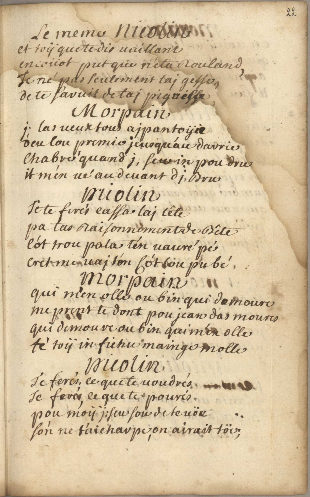
Le meme Nicolin
et toÿ que te dis uaillant
encoüot put que n'eta rouland,
te né pas seulement lai gesse,
de te saruit de tai piquesse
Morpain
Ji las ueux tous aipantoÿie
deu lou premie jeusqu'au darrie
chabré quand ji scu in pou dru
it m'en ué au deuant di bru
Nicolin
te te ferés cassa lai tête
pa tas raisonnement de bête
c'ot trou pala t'en uauré pé
cret me uai t'on c'ot lou pu bé
Morpain
qui m'en olle ou bin qui demoure
me prent te dont pou jean das moures
qui demoure ou bin qui m'en olle
té toÿ in fichu mainge molle
Nicolin
Te ferés, ce que te uoudrés
Te ferés, ce que te pourés
pou moÿ ji seu sou de te uöe
s'on ne t'aicharpe, on airait töes,
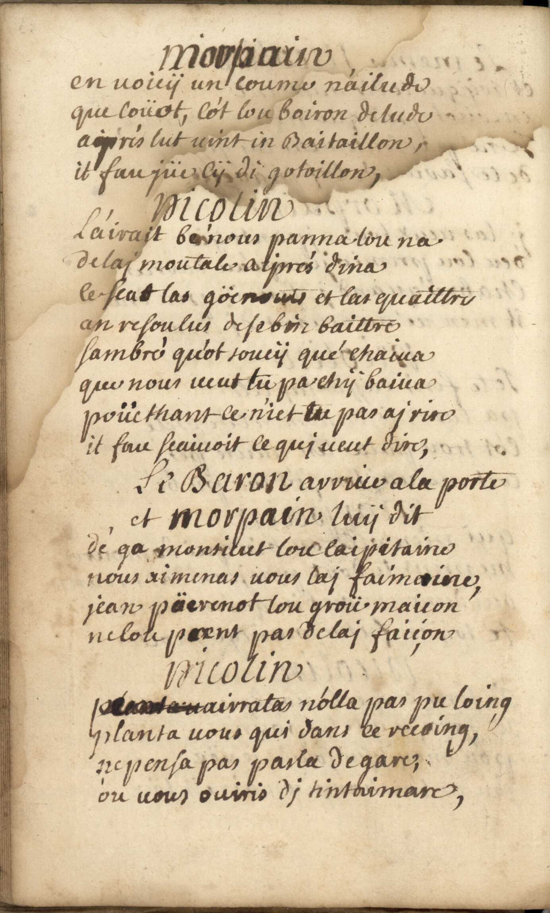
Morpain
en uoicÿ un coume n'ailude
que coüot, c'ot lou boiron de lude
aiprés lut uint in baitaillon,
it fau jüe cÿ di gotoillon,
Nicolin
L'airait bé nous panna lou na
delai moutale aiprés dina
ce scat las göerneurts et las quaittres
an resoulue de se bin baitre
sambré qu'ot soucÿ qué chaiua
que nous ueut tu paschÿ baiua
poüethant ce n'iet tu pas aj rire
it fau scaiuoit ce qui veut dire,
Le Baron arriue a la porte et morpain luÿ dit
De ga monsieut lou caipitaine
nous aimenas uous laj faimeine,
jean päerenot lou groü maiçon
ne lou prent pas delai faiçon
Nicolin
planta airratas n'olla pas pu loing
planta uous qui dans ce recoing,
ne pensa pas parla de gare,
ou uous ouiris di tintaimare,
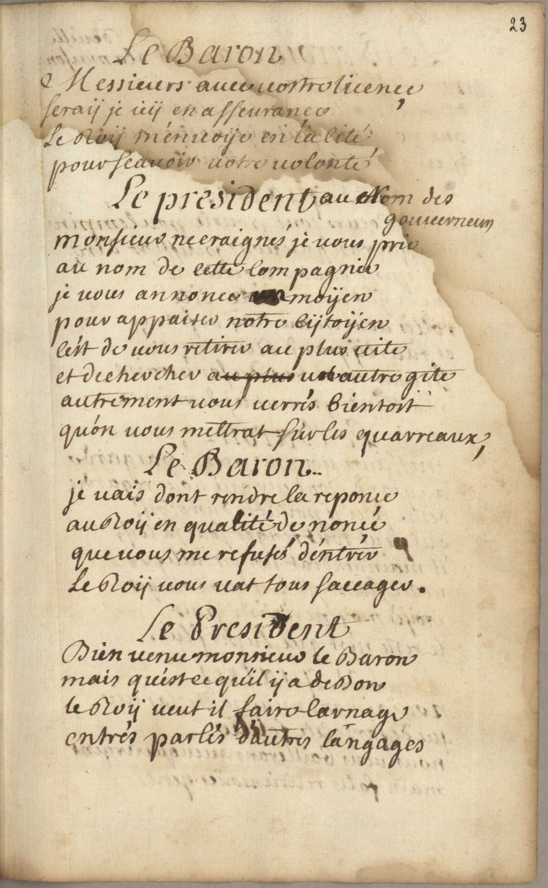
Le Baron
Messieurs auec uostre licençe,
seraÿ je icÿ en asseurançe
Le Roÿ m'enuoÿe en la cité
pour scauoir uotre uolonté
Le president au nom des gouuerneurs
monsieur ne craignés je uous prie
au nom de cette compagnie
je uous annonce un moÿen
pour appaiser notre cÿtoÿen
c'est de uous retirer au plus uite
et de chercher au plus un autre gite
autrement uous verrés bientost
qu'on uous mettrat sur les quarreaux,
Le Baron
Je uais dont rendre la reponçe
au Roÿ en qualité de nonçe
que uous me refusés d'entrer
Le Roÿ uous uat tous saccager.
Le President
Bien uenu monsieur le baron
mais qu'est ce qu'il ÿ a de bon
le roÿ veut il faire carnage
entrés parlés d'autres langages
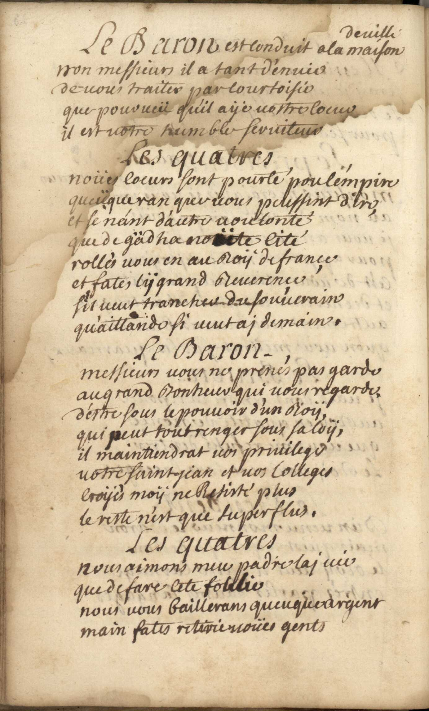
Le baron est conduit a la maison de uille
Non messieurs il a tant d'enuie
de uous traiter par courtoisie
que pourueü qu'il aÿe uostre coeur
il est uotre humble seruiteur
Les quatres
noües coeurs sont pourté pou l'empire
queüque ran que uous poussint dire,
et se n'ant d'autre uoulonté
que de gädha noüte cité
rollés uous en au roÿ de françe
et fates cÿ grand reuerençe
s'il ueut trancher du souuerains
qu'aittande si ueut ai demain.
Le Baron
Messieurs uous ne prenés pas garde
au grand bonheur qui uous regarde
d'estre sous le pouuoir d'un roÿ,
qui peut tout renger sous sa loÿ,
il maintiendrat uos priuileges
uotre saint-jean et uos Colleges
croÿés moÿ ne resisté plus
le reste n'est que superflus.
Les quatres
nous aimons meu padre lai uie
que de fare cete folelie
nous uous baillerans queuque argent
main fates retirié uoües gents
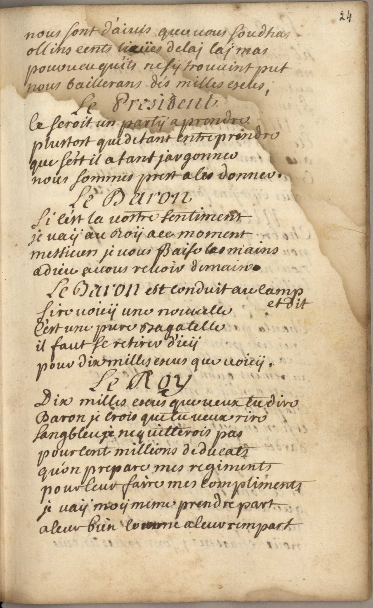
nous sont d'aiuis que uous soudhas
ollins cents lieües delai lai mas
pourueu qui'its ne sÿ trouuint put
nous baillerans dés milles escus.
Le président
Ce seroit un partÿ a prendre
plustot que de tant entreprindre
que s'ert il a tant jargonner
nous sommes prest a les donner.
Le baron
Si c'est la vortre sentiment
je uaÿ au Roÿ a ce moment
messieur je uous baise les mains
adieu auous reuoir demain.
Le baron est conduit au camp et dit
Sire uoicÿ une nouuelle
c'est une pure bagatelle
il faut se retirer d'icÿ
pour dix milles escus que uoicÿ.
Le Roy
Dix milles escus que ueux tu dire
Baron je crois que tu ueux rire
sangbleu je ne quitterois pas
pour cent millions de ducats
qu'on prepare mes regiments
pour leur faire mes compliments
je uaÿ moÿ meme prendre part
a leur bien coume a leur rempart
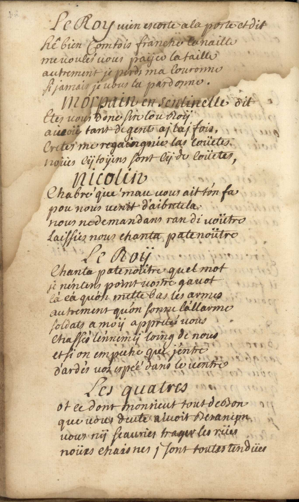
Le Roy uien escorte a la porte et dit
Hê bien Comtois franche canaille
me uoulés uous paÿer la taille
autrement je perds ma couronne
si jamais je uous la pardonne.
Morpain en sentinelle dit
Etes uous donc sire lou roÿ
aiuoü tant de gents ai lai fois,
cretes me regaingnie las coüetes
noües cÿtoÿins sont cÿ de coüetes.
Nicolin
Chabré que mau uous ait t'on fa
pou nous uenit d'aibrete la
nous ne demandans ran di uoütre
laissiés nous chanta pate noütre
Le Roÿ
Chanta pate noütre quel mot
je n'entens point uostre gauot
cá cá qu'on mette bas les armes
autrement qu'on sonne l'allarme
soldats a moÿ appretés uous
chassés l'ennemÿ loin de nous
et si on empeche que j'entre
d'ardés uos espée dans le uentre
Les quatres
Ot ce dont monsieur tout de bon
que uous deute aiuoit Besançon
uous nÿ scaurier trager les rües
noües chaisne i sont toutes tendües
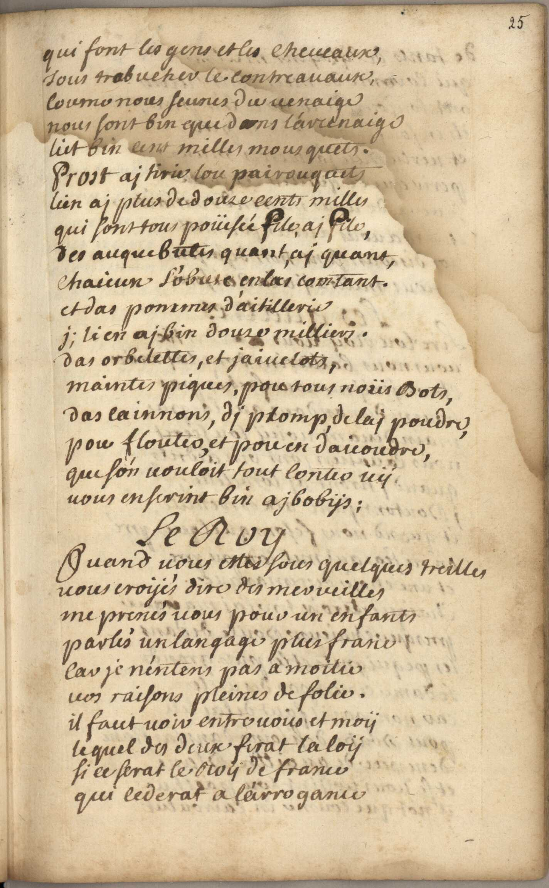
qui font les gens et les cheueaux
tous trabucher le contre auaux
coume nous scunes du uenaige
nous sont bin que dans l'arcenaige
liet bin cent milles mousquets.
Prost ai tirie lou pairouquets
lien ai plus de douze cents milles
qui sont tous poüesée file ai file,
des arquebutes quant ai quant,
chaicun s'obute en lai comtant.
et das pommes d'aitillerie
Ji li en ai bin douze milliers
das orbelettes, et jaiuelots,
maintes piquier, pou tous noüs bots,
das cainnons, di plomp, de lai poudre,
pou flouter, et pou en daicoudre,
que s'on uoiloit tout conter icÿ
uous enserint bin aibobÿs;
Le Roy
Quand uous ettes sous quelques treilles
uous croÿés dire des merueilles
me prenés uous pour un enfants
parlés un langage plus franc
car je n'entens pas a moitié
uos raisons pleines de folie.
il faut uoir entre uous et moÿ
lequel des deux ferat la loÿ
si ce serat le roy de france
qui cederat a l'arrogance
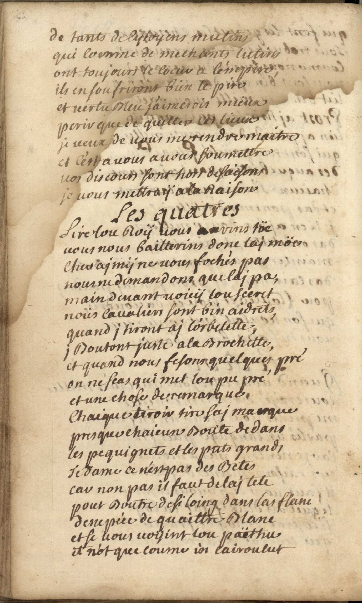
de tants de cÿtoÿens mutins
qui coumme de mechants lutins
ont toujours le coeur a l'empire,
ils en soufriront bien le pire
et uertu bleu j'aimerois mieux
perir que de quitter les lieux
je ueux de uous me rendre maitre
et c'est a uous a uous soumettre
uos discours sont hors de de saisons
je uous mettraÿ a la raison
Les quatres
Sire lou roÿ uous [au]rins töe
uous nous baitterins donc lai möe
cher aimÿ ne uous fochés pas
nous ne demandons que lai pa,
main deuant uoicÿ lou secret
noüs caualiers sont bin aidrets,
quand i tiront ai l'orbelette,
i boutont juste a la brochette,
et quand nous fesons quelques pré
on ne scas qui met lou pu pré
et une chose de remarque
chaique tiroir tire sai marque
presque chaicun boute dedans
les pequignets et les puts grands
te dame ce n'est pas des betes
car non pas il faut de lai tete
pour boutre de si loing dans les flanc
de ne pice de quaittre blanc
et se uous uoÿint cou paëthu
et n'ot que coume in cairoulut
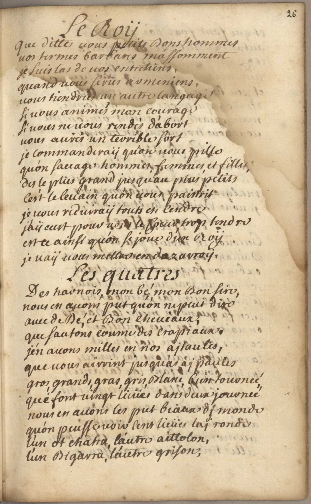
Le Roÿ
que ditte uous petits bonshommes
uos termes barbares m'assomment
he suis las de uos entretiens,
quand uous series armeniens,
uous tiendriés un autre langage
si uous animés mon courage
si uous ne uous rendés d'abort
uous aurés un terrible sort
je cammanderaÿ qu'on uous pille
qu'on saccage hommes, femmes, et filles,
des le plus grand jusqu'au plus petits
c'est le leuain qu'on uous paistrit
je uous reduiraÿ touts en cendre
j'aÿ eust pour uous le coeur trop tendre
est ce ainsi qu'on se joue d'un roÿ
je uaÿ uous mettre en dezarroÿ
Les quatres
Des harnois, mon bé, mon bon sire,
nous an auons put qu'on ne peut dire
auec de bé, et bon cheueaux,
que sautons coume des crapiaux.
j'en auons milles en nos aitaules,
que uous airrint jusqu'as aipaules
gros, grand, gras, gris, blanc, bien tournée,
que font uingt lieüs dans deux journée
nous en auons les put biaux di monde
qu'on puisse uoir cent lieües lai ronde
l'un ot chatra, l'autre aittolon,
l'un bigarra, l'autre grison,
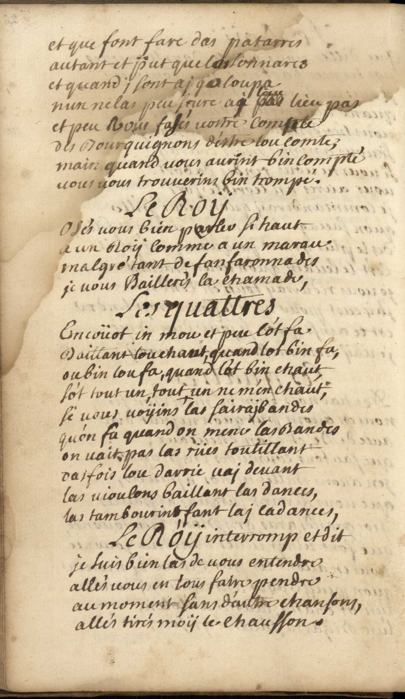
et que font fare das patarres
autant et p̈ut que lai tonnares
et quand i sont ai galoupa
nun ne las peu scure ai lieu lieu pas
et peu uous fasés uortre compte
des bourquignons d'estre lou comté,
main quand uous aurint bin compté
uous uous trouuerins bin trompé.
Le Roy
Osés uous bien parler si haut
a un roÿ comme a un marau
malgré tant de fanfaronnades
je uous baillerés la chamade,
Les quattres
Encoüot in mou et peu l'ot fa
Baittant touchant quand lot bin fa,
ou bin lou fa, quand l'ot bin chaut
s'ot tout un tout un ne m'en chaut,
si uous uoÿins las sairaibandes
qu'on fa quand on mene las bandes
on uait pas las rües toutillant
daifois lou darrie uai deuant
las uioulons baillant las dances,
las tambourint fant lai cadances,
Le Roÿ interromp et dit
Je suis bien las de uous entendre
allés uous en tous faire pendre
au moment sans d'autre chansons,
allés tirés moÿ le chausson.
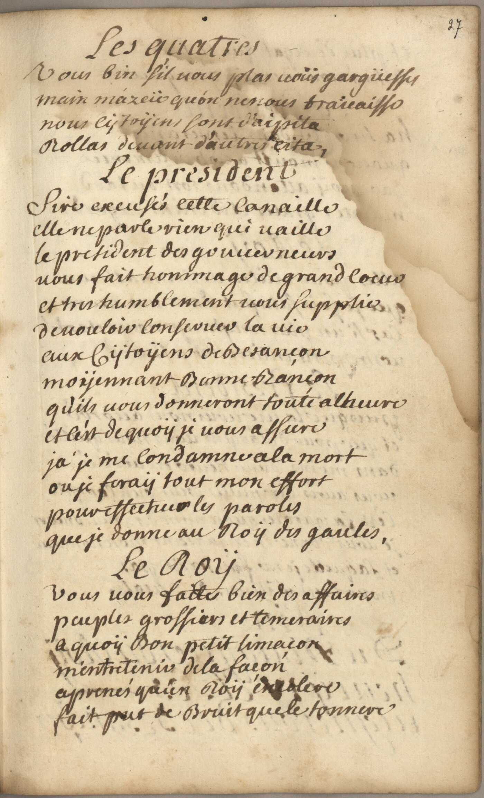
Les quatres
Uous bin s'il uous plas uoüs gargüesses
main mazeü qu'on ne nous traicaisse
nous cÿtoÿen sont d'aipita
Rollas deuant d'autres cita,
Le president
Sire excusés cette canaille
elle ne parle rien qui uaille
le president des gouuerneurs
uous fait hommage de grand coeur
et tres humblement uous supplie
de uouloir conseruer la uie
aux cÿtoÿens de Besançon
moÿennant bonne rançon
qu'ils uous donneront toute alheure
et c'est de quoÿ je uous assure
ja je me condamne a la mort
ou je feraÿ tout mon effort
pour effectuer les paroles
que je donne au roÿ des gaules,
Le roÿ
uous uous faites bien des affaires
peuples grossiers et temeraires
a quoÿ bon petit limaçon
m'entretenir de la façon
aprenés qu'un roÿ en colere
fait put de bruit que le tonnere
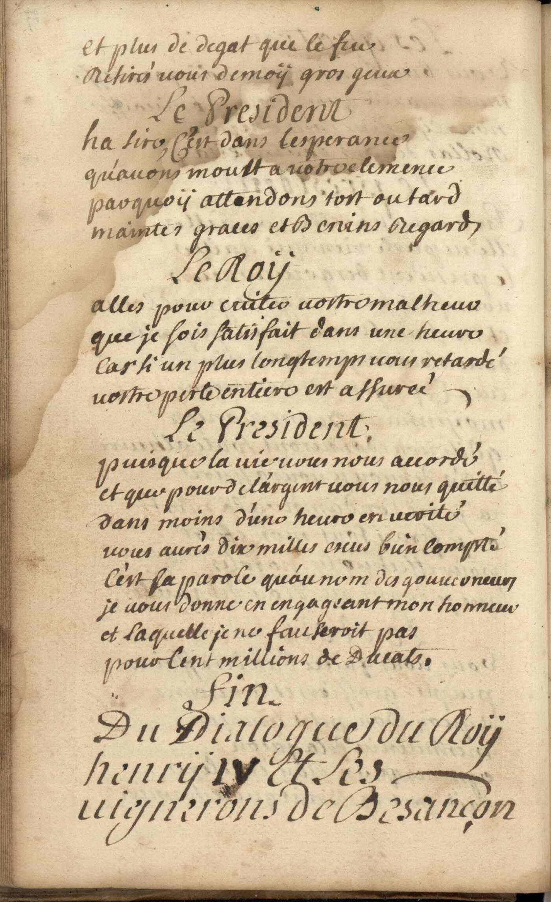
et plus de degat que le feu
retirés uous de moÿ gros geux
Le président
Ha sire, c'est dans lesperance
qu'auons moult a uotre clemence
parquoÿ attendons tost ou tard
maintes graces et benins regards
Le Roÿ
Alles pour euiter uostre malheur
que je sois satisfait dans une heure
car si un plus longtemps uous retardé
uostre perte entiere est assurée
Le president
puisque la uie uous nous accordé
et que pour de l'argent uous nous quitté
dans moins d'une heure en uerité
uous aurés dix milles escus bien compté
c'est la parole qu'on nom des gouuerneurs
je uous donne en engageant mon honneur
et laquelle je ne fauseroit pas
pour cent millions de ducats.
Fin du dialogue du Roÿ henrÿ IV et les uignerons de Besançon